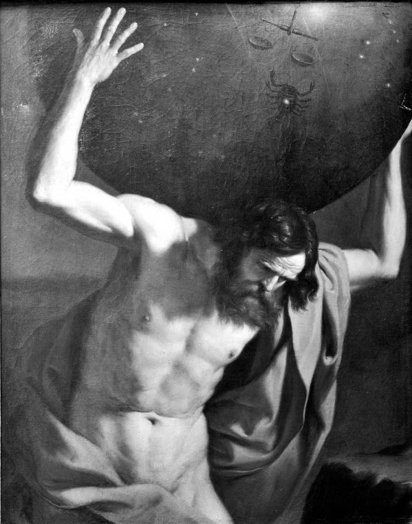

Sabitlik ve kaos
Zaman değişiyor, içinde bizler de değişiyoruz. Dünya dönüyor, nesneler değişiyor. Ama öyle çok da değişmiyor. Bir hız limiti olmalı. Neyse ki var. Kedimiz aniden konuşmaya başlamayacak.
Bir gecede köpeğe de dönüşmeyecek. Ben bir duvarın içinden geçmeyeceğim; ne de bir çift kolum daha olacak. Aslında değişimin değişmeyen şeylerin rahat sığınağı içinde sürdüğünü düşünüyoruz. Bu sığınak şeylerin süregiden örüntülerini belirleyen doğa yasalarıdır.
Büyük Umutlar
Aklı başında herkes şeylerin olageldikleri gibi süreceklerini umar. Peki, doğadaki düzenlilikten bahsetmemizi sağlayan ne? Bunun için öne sürebileceğimiz neden ne? Burada bir çıkmazla karşılaşıyoruz. Bulduğumuz bir sabitlik için bir neden vermek durumundayız, ama bunu ya deneysel delile ya da matematik veya mantığa dayanarak yapabiliriz; ya “a priori”, yani deney öncesi, ya da “a posteriori”, yani deney sonrası bir kanıta başvuracağız. Ama a posteriori bilgimizin bize tüm söyleyebileceği, eğer bazı şeyler (kütlesel çekim, güçlü veya zayıf kuvvetler, son derece ince ayarlı doğa yasaları) eski bilindik şekilde devam ederse, o zaman onlara bağlı olan şeylerin de aynı şekilde devam edeceğidir. Eğer kütlesel çekim bildiğimiz şekilde devam ederse, o zaman güneş sistemi dönüşlerine devam edecektir. Atomların çekirdeği içindeki güçlü ve zayıf kuvvetler çalışmakta oldukları gibi çalışmaya devam ederse, madde parçalanmayacak ya da içe patlamayacaktır. Ama herhangi bir düzenliliği ancak başka bir düzenliliğe dayanarak savunabiliyoruz. Bu düşünce elektron üzerindeki yük güçleri, ışık hızı, ya da elektromanyetik kuvvetlerin güçleri gibi bütün bu şeyleri belirleyen temel büyüklüklere kadar inmemizi sağlıyor. Bunlar oldukları gibi duruyor görünüyorlar, ama onların sabitliği soruyu durdurmuyor. Herhangi bir a posteriori neden sadece soruyu geriye doğru itiyor ve aynı sorunun başka bir sabitlik için sorulmasına neden oluyor. Soruyu sormaya devam edersek sonunda hiçbir cevabın olmadığı bir noktaya geliriz. Bu durumda ne diyebiliriz ki? “O olageldiği gibi oluyor,” “Nerede ve ne zaman araştırdıysak hep bu şekilde davrandı, öyleyse belki de bundan genel bir sonuç çıkarabiliriz.” Onun güvenilir olduğuna ve bu şekilde kalmaya devam edeceğine inanıyoruz. Ama sonuçta bu tüm bilimsel inşalarımızın dayandığı desteksiz bir dogmadan, bir iman akidesinden başka ne ki?

ATLAS (1645-1646)
Guercino (1591-1666)
<>
Doğa bizi bu beklentilere
zorlamaktadır.
Düşeceğimi ummadan bir uçurumdan atlayamam.
<>
Bu kaygıyı abartmak yanlıştır. Yakın geleceğimizle ilgili endişe duymamızı gerektirecek bir şey yok. Bizler yaşamlarımızı yakın geleceğin gerçekten yakın geçmişe benzeyeceği varsayımı üzerine kuruyoruz. Neleri yiyeceğimizle ilgili en iyi rehber geçmişte başarıyla yediğimiz şeylerdir; uyandığımızda sahip olacağımız kol sayısı, ya da konuşacağımız dil, ya da bulunacağımız yerle ilgili en iyi rehber yattığımızda ne durumda olduğumuzdur. Strüktürleri demirden değil çelikten yapıyoruz, zira çelik gerilime her zaman daha dayanıklı olduğunu göstermiştir; bugüne kadar hep olmuş olduğu gibi yakın gelecekte de oksijen ve suya ihtiyaç duyacağımızı umuyoruz. Bu düzenliliklerin kendi yararına (ya da daha olası olarak zararına) bozulmak üzere olduğunu düşünen biri yanlış yoldadır. Karl Popper bilimin bize tüm verebileceğinin, ne olabileceğine dair “cesur tahminler” olduğu önermesiyle (bkz. Ne Biliyorum?) tanınır. Ama eğer cesur tahminden kastedilen gerçekten inanmanın altında kalan bir şeyse, bu benzetmenin yanlış olması gerekir. Bizim deneysel bilimimiz, dünyanın nasıl çalıştığına dair keşiflerimiz bize salt hipotezlerden ya da tahminlerden daha fazlasını verirler. Bize kesinliklerimizi, tüm yaşamlarımızın önvarsaydığı inançları sağlarlar. Aslında, bu sürekliliklere güvenmememizi söyleyen kuşkucu filozof nefesini boşuna tüketmektedir. Doğa bizi bu beklentilere zorlamaktadır. Düşeceğimi ummadan bir uçurumdan atlayamam, ya da engelleneceğimi ummadan bile isteye bir duvardan geçemem. Aynı beklentiler bir kedi veya bir köpek için de geçerlidir. Hayvani doğalarımız dünyada yolumuzu nasıl bulacağımızı bize söyler. Onların verdiği güveni hiçbir akıl yürütme sarsamaz. Olur da bir gün bir biliminsanı her şeyi altüst edebilecek bir değişimin kokusunu alırsa, bu değişim de amansız pençesi kütle çekim kuvvetini, maddenin tutunum kuvvetini, ya da yaşamımızı düzen içinde tutan diğer kuvvetleri yok etmek üzere olan daha büyük düzenliliklere dayanacaktır. Belki bu durumda ne düşüneceğimizi bilemeyebiliriz.
Deli Gömleği
İlk bakışta radikal bir değişimin olmayacağına ve hatta kaosun çıkmayacağına dair hiçbir a priori neden verilemez gibi görünüyor. Aslında olaylara bir deli gömleği giydirmek istiyoruz. Bu mantıksal zorunluluk altında olayların değişmesi imkânsız olsun istiyoruz. Bu zamandan etkilenmeyen, kendi kendini sürdüren bir şey, bir kez koyuldu mu bir daha iptal edilemeyen bir yasa olmak zorundadır. Dünyayı omuzlarında taşıyan kadim Atlas imgesi istediğimiz şeyin mitolojideki karşılığı olarak düşünülebilir, ama elbette, insan metanetini örnekleyen hiçbir şey zamandan ve değişimden bağışık olmayacaktır. Atlas sıkılabilir, yorulabilir veya dikkatini toplayamayabilir. Omuzlarını silkebilir ve her şeyi düşürebilir. O halde istediğimize kavuşmak için tamamıyla farklı bir şeye gerek var, ama işin kötüsü bunun nasıl bir şey olduğu hakkında hiçbir fikrimiz yok: Anlayış gücümüzün onu kavraması mümkün değil.
Eğer değişime karşı bağışıklığı olan ve doğayı her zaman olduğu gibi devam etmesini sağlayacak şekilde kısıtlayan “bir deli gömleği” olsaydı, işler daha güvenli olabilirdi. Başka bir deyişle, bizler fizik ve kimya yasalarının matematik yasaları gibi olmasını istiyoruz. Tıpkı her ardışık iki çift sayının arasında bir tek sayının var olduğunu söyleyen yasanın değişmez, zamandan bağışık, sadece bu dünyanın olumsal koşullarında değil, tasavvur edebileceğimiz tüm mümkün dünyalarda zorunlu olarak doğru olması gibi, biz de kısıtlayıcı bir olgu, doğal düzenin (bizim bakış açımızdan) iyi olan davranışını devam ettirmesini sağlayan fizik ya da metafizik bir talimat bulmak istiyoruz.
Ne yazık ki, böyle bir “garantör” için fiziğin bulabildiği en iyi adaylar “yapmakta olduğunu yapmaya devam eden” şeylerdir: Doğadaki temel kuvvetlerin ve büyüklüklerin sabit güçleridir. Evrenbilimci Martin Rees, Temel Altı Sayı adlı kitabında, bildiğimiz haliyle doğanın seyrinin bağlı olduğu “temel altı sayı”dan söz eder. Bunların arasında atomları bir arada tutan elektriksel kuvvetlerin gücünün kütle çekim kuvvetine oranı (1036), hidrojenin füzyonla helyuma dönüştüğünde saldığı enerji miktarını tanımlayan sayı (kütlesinin 0,007’si) ve kâinatın düzenli olarak var olması için çok küçük toleranslar içinde tam da oldukları gibi olmaları gereken diğer büyüklükler vardır. Ama bilebildiğimiz kadarıyla bu sabitlikler ilke olarak farklı olabilirler ve değişebilirler. Gerçekten de, onların değişip değişmediğiyle ilgili testler ve ölçümler yapılmaktadır. Örneğin, bazı seçkin fizikçiler yüklü parçacıklar ve elektromanyetik alanların arasındaki etkileşimlerin güçlerini belirleyen bu “ince yapı sabitinin” (şu anda 1/137,03599958 olan) değerinin zaman içinde biraz değiştiği konusunda düşünceler geliştirmişlerdir. Belki de, şansımıza, 2004 yılında, astrofizikçilerin belirleyebildiği kadarıyla, bu değerin değişmediği ilan edilmiştir. Ama burada, sayı sisteminde olduğu gibi bir “değişemezdi” iması yoktur. Ayrıca ne kadar astrofiziksel gözlem yapılırsa yapılsın, bunun bize iki ardışık çift sayının arasında bir tek sayısının bulunduğunu saptamada yardımcı olamayacağı açıktır.
Eğer bir ölçüm böylesi bir sabitin değiştiğini gösterse, araştırmalar bu değişimi açıklamaya yönelir. Bu nasıl olmuş olabilir? Bu durumda değişmeyen başka bir sabit bulmak gerekir. Açıklamanın işleyişi böyledir. Böylece, örneğin, ince yapı sabiti, evrendeki enerji miktarı gibi başka bir şeye, yasaya benzer bir ilişkiyle bağlı olan bir değere sahip olur; bu da onun sabit, değişmez bir yasa olması demektir. Ve bu durumda yine eski soru gündeme gelir: Yerde ya da gökte bu ilişkinin değişmemesini sağlayan nedir? Bu sıkıcı döngüyle karşılaşan David Hume doğa biliminin yapabileceğinin nihayetinde “cehaletimizi biraz daha uzun süre savmak” olduğunu belirtmiştir.
Doğaüstü İnce Ayar
Bazı seçkin biliminsanlarına göre bu sabitlerin sergilediği ince ayar öylesine inanılmaz, dünyamızın (şimdiye kadarki) “iyi” davranışının altında yatan düzenin oluşmasını sağlayan “çakışmalar” öylesine olağandışıdır ki hem bu sabitlerin sahip oldukları değerlerin hem de bu değerlerin değişmezliğinin açıklanması için “ilahi bir açıklama”ya başvurmaktan başka çaremiz yoktur. Eğer “zaman geçirmeyen gömleği” doğanın içinde bulmamız mümkün değilse, belki de en iyisi onu doğanın dışında aramaktır. Bu doğanın iyi davranışının gözetleyicisi ve destekleyicisi olan müşfik ilahın varlığını kanıtlamaya yönelik çok eski argümanların yeni bir versiyonudur. Aslında bu yeni bir Atlas’tır. Burada ilah bütün gösterinin sadece ilk nedeni ve mimarı değildir; aynı zamanda onun devamının nedeni ve gözetenidir; onun sıkı denetimi olmasa tüm evren zamansızlığın ve kaosun boşluğuna yuvarlanabilir.
Bu anlayışta sorun, doğanın dışına bakılması talimatının bizim meseleyi anlamımıza yardımcı olmamasıdır. İnsan zekâsıyla ve niyetleriyle analoji içinde tasarlanan bir ilah, tıpkı bizim olduğumuz ve Atlas’ın olabileceği gibi, değişebilir. Bu yüzden ilahiyatçıların dünyevi varlıklarla kurulan analojiyi reddettiğini farz edelim. Geleneksel anlayışta, sonsuz, değişmeyen Tanrı uzay ve zamanın ötesindedir, var olmaması mümkün olmayan zorunlu bir varlıktır ve varoluşu için hiçbir şeye bağlı değildir. Tek kelimeyle o (ya da onlar) “aşkın”dır. Bu sıfatlar çok etkileyici olabilir ama sorun tam da bu sıfatların onun fiziksel evrenle (ya varlığa gelişini sağlayarak ya da onun düzeninin devamını sağlayarak) kurduğu etkileşimi kavranılamaz kılmasıdır: O, bizim anlayışımızın tamamıyla ötesindedir. İmdi doğanın düzeninin güvencesi olan her neyse onun doğanın dışında, anlayış gücümüzün ötesinde olduğunu söylemek çok hoş olabilir, ama eğer onu anlamamız imkânsızsa onu devreye sokmakla meselenin anlaşılmasında en küçük bir ilerleme sağlamış olmayız.
Bu ilahın varlığını kabul edenler ile inkâr edenler arasındaki eski tartışmaya şaşırtıcı bir anlam kazandırır. Bu noktada inkârcı, “Doğanın süregiden düzenini açıklayan aşkın bir gerçeklik hakkında herhangi bir şey bilemeyiz,” derken, inanan “Doğanın süregiden düzenini açıklayan aşkın gerçeklik –yani Tanrı– hakkında herhangi bir şey bilemeyiz,” demektedir. Sonuçta ikinci cümledeki ara söz de meseleyi anlamamıza herhangi bir katkı sunmadığına göre, ikisi arasındaki fark sadece lafzîdir.
Ludwig Wittgenstein’ın belirttiği gibi, “Bir hiç, tıpkı hakkında hiçbir şey söylenemeyen bir şey kadar işe yarar.” Tüm kâinatın varoluşunun devam etmesini sağlama gücüne sahip olan şey anlama yetimizin ötesinde olmak zorundadır; bu durumda onun var olduğunu ya da var olmadığını söylememiz hiç fark etmez.
Ancak insanların bu boşluğa uzun süre tahammül edemeyerek önlerindeki boş tuvali kendilerine göre doldurmaya başlamaları elbette işleri değiştirir. Bu da Tanrı’nın bizler gibi gözleri ve kulakları olan, kıskançlık, sevgi ve öfke gibi insana özgü duygulara ve tutkulara sahip olan, bizim kabileyi diğer kabilelere tercih eden gökteki Büyük Adam modeline göre tasavvur edilmesine dönmektir. Ama bu tasavvurun kozmolojik soruna hiçbir yardımı olamaz. İlah ne kadar çok bizler gibi olursa sıkılma, yorulma ve işini tümüyle savsaklama olasılığı da o kadar çok olur.
Akıl ve İman
Şeylerin olageldiği gibi olmaya devam etmesi meselesine dönersek, belki bu düşüncelerden bir teselli çıkarabiliriz: Bu düzenliliğe duyduğumuz güvene “ihanet” edilse bile, en azından biz bundan haberdar olmayacağız. Varoluşumuz tamamen şeylerin olageldiği gibi devam etmesini sağlayan ince ayarlara bağlıdır. Bunlar bozulursa, o zaman her şey göz açıp kapayıncaya kadar biter. Belki de zaman kavramının kozmik düzenin düzgün işleyen saatlerini gerektirdiğini kabul edebiliriz: Bu düzenin son bulmasıyla zamanın kendisi de sona erecektir. Bu durumda doğal düzenliliklerin ilelebet süreceği, yani bu düzenlilikler olmadığında zamanın da olmayacağı düşüncesiyle teselli bulabiliriz. Ama doğrusu bu bir “züğürt tesellisi”dir. Sabitlikler ilelebet sürecekse en azından, diyelim, gelecek çarşambadan sonrasına kadar süreceklerini umabiliriz. Ama “Onlar ilelebet, yani zamanın sonuna kadar sürecek” dedikten sonra, “ancak ne yazık ki gelecek çarşamba hiç gelmeyecek, çünkü zaman salı günü son bulacak” demek hiç de hoş olmasa gerek.
Burada uğraştığımız sorun büyük oranda filozofların sorunudur. Daha önce söylediğimiz gibi, gündelik yaşamlarımızı dayandırdığımız süregiden düzene olan doğal güvenimizi pek etkilemez. Ama bazı bağlamlarda, duyguların yükseldiği durumlarda, düzenliliğe olan kaçınılmaz güven sarsılabilir. İşte bu noktada Popper’ın bizleri sadece “cesur tahminciler” olarak tasvir eden şemasına sarılmak gerçekten büyük zararlara yol açabilir. Kozmolojik ve jeolojik standart zaman çizelgesini ele alın. Dünyanın yaşının, kayaçların oluşumunun, hayvanların evriminin belirlenmesi düzenliliklere dayanır. Bu düzenlilikler radyoaktif bozunma hızları, kayaçların depolanma ve oluşma hızlarından yapılan ekstrapolasyonları ve bilimsel analizle türetilmiş başka bilgileri içerir. Bunlar birbirleriyle uyumlu hale getirilerek dünyanın dört milyar yaşında olduğunun belirlenmesinde kullanılır ve daha sonra da jeolojik kayıt içindeki olayların zaman çizelgesi oluşturulur. Ama bütün bunların sadece “cesur tahminler” olduğunu söylersek, o zaman dinsel köktencilerin ve yaratılışçıların, “Bizim ‘cesur tahminimiz’ de dünyanın sadece altı bin yaşında olduğudur ve bu ‘hipotez’ de bilimin öne sürdüğü ‘hipotez’ kadar iyidir,’” demelerinin yolunu açmış oluruz. Bu da aslında titiz bir bilim felsefesinin en bilimsel olmayan saçmalıklara kapı aralaması ve bizi bu saçmalıkları karşılayacak rasyonel silahlardan yoksun bırakmasından başka bir şey değildir.
Bunun yerine tıpkı bilimci gibi yaratılışçının da yaşamını ve faaliyetlerini düzenliliklere dayandırdığını söylememiz gerekir – ancak o bundan sonra neyi seçip neyi seçmeyeceğine karar verme hakkına sahiptir. Onun durumu dünyanın beş dakika önce başladığını, ya da yaratılışçının kutsal kitabının geçen hafta uçan dairelerle gelen dünya dışı yaratıklarca yazıldığını, ya da ellerini çırparak uçabileceğini söyleyen birisinin durumundan daha iyi değildir.
Bu bizim güvenli beklentilerimizin sadece bir iman meselesi olmadığını gösterir. Doğanın nasıl olacağını tahmin etmek için onun şimdi ve geçmişte nasıl olduğu kullanmak özünde hiç de keyfi olmayan tek stratejidir. Bu, kanılara güvenmeyi sağlar ve bu güven her gün her şekilde işimize yarar.